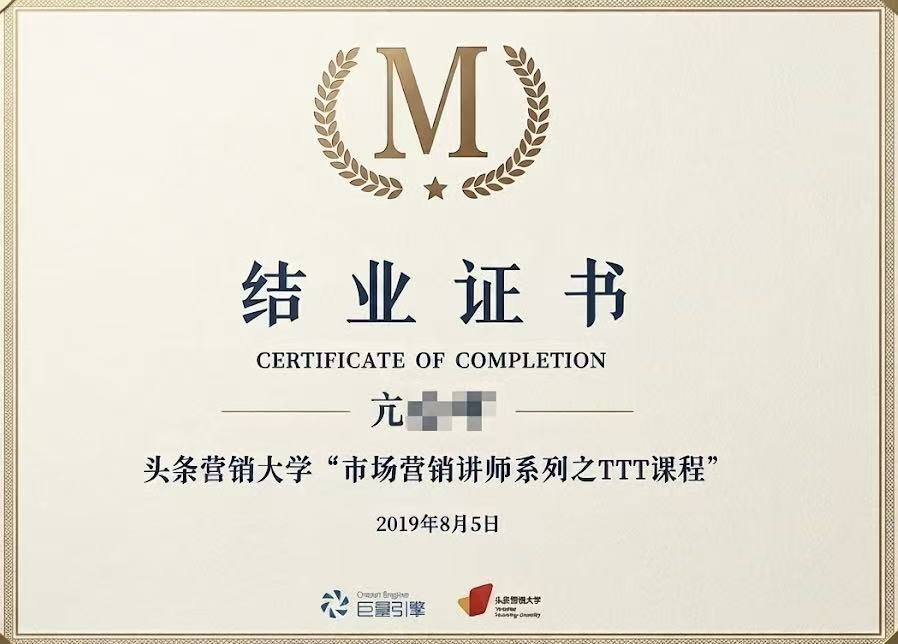

David Kang
◎ 四川 · 成都
“以严谨的逻辑构建生活基本盘，以极客的敏锐探索商业新边界；在自律中追求自由，持续迭代，做自己人生的超级个体。”
System initialized. Click tags to analyze core competencies...
四川农业大学211院校
广告学 + 产品设计
资深汽车爱好者，深度评测挖掘好车
滑雪发烧友，追求速度与重力的平衡
烹饪精研，享受食材重组的秩序感
绿植美学，在都市里构建微自然生态
木工制作，沉迷手工打磨的纯粹专注

字节跳动 ATT 培训讲师 SixSigma (六西格玛) 认证
SixSigma (六西格玛) 认证